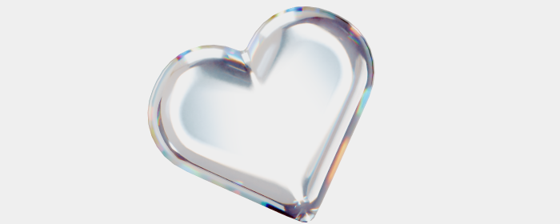

Зумеры выбирают спокойную карьеру
Поколение Z постепенно меняет саму логику карьеры. Для них стабильность психического состояния часто важнее быстрого роста зарплаты. Они не готовы жертвовать личной жизнью ради статуса и чаще выбирают гибкий график и удалённую работу.

Зумеры обращают внимание на атмосферу в команде, стиль управления и прозрачность процессов. Им важно понимать, какие задачи они решают и какой вклад вносят. Осознанность постепенно становится частью карьерного выбора: человек оценивает не только доход, но и нагрузку, формат коммуникации, возможность развития без постоянного перегруза.
Работодатели уже адаптируются: появляются программы поддержки ментального здоровья, гибкие форматы занятости, горизонтальные структуры. Построение карьерного пути перестаёт быть гонкой, он теперь воспринимается как длинная дистанция, где важны устойчивость и комфорт.